Ce servicii extinde un spital județean într-un județ care îmbătrânește?
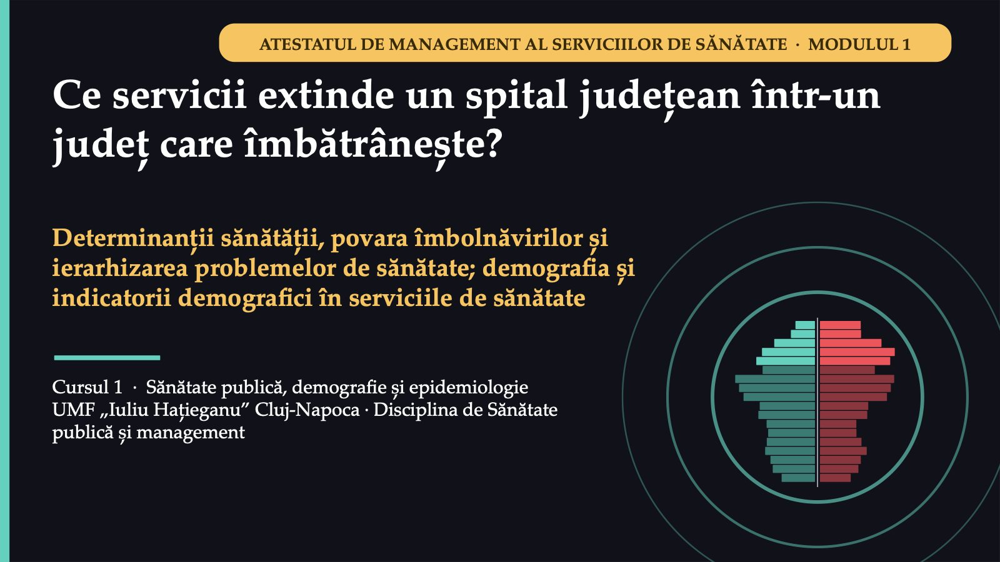
1 / 83Ce secție ați extinde în următorii cinci ani?
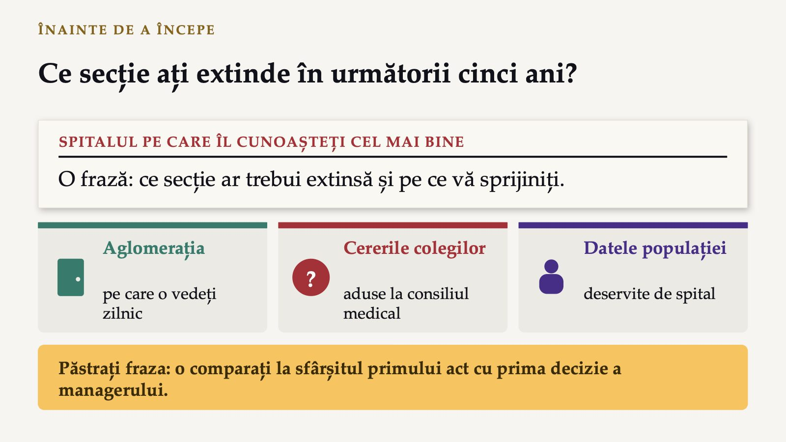
2 / 83„Județul care îmbătrânește”
![UN CAZ, TREI ACTE, PATRU ORE „Județul care îmbătrânește” Votați pe telefon, fiecare pentru sine. Rezultatul apare o singură dată, după închiderea votului. Pauză · 55–70′ Pauză · 150–165′ Actul 1 · 0–55′ Județul, spitalul, prima decizie; determinanții, povara, valoarea Actul 2 · 70–150′ Demografia județului; paliativele, maternitatea; cele 100 de puncte Actul 3 · 165–225′ Ierarhizarea a patru probleme; deznodământul; un alt județ Final · 225–240′ Ce faceți diferit luni dimineață; trei întrebări anonime](diapozitive/C01/003.jpg) 3 / 83
3 / 83?
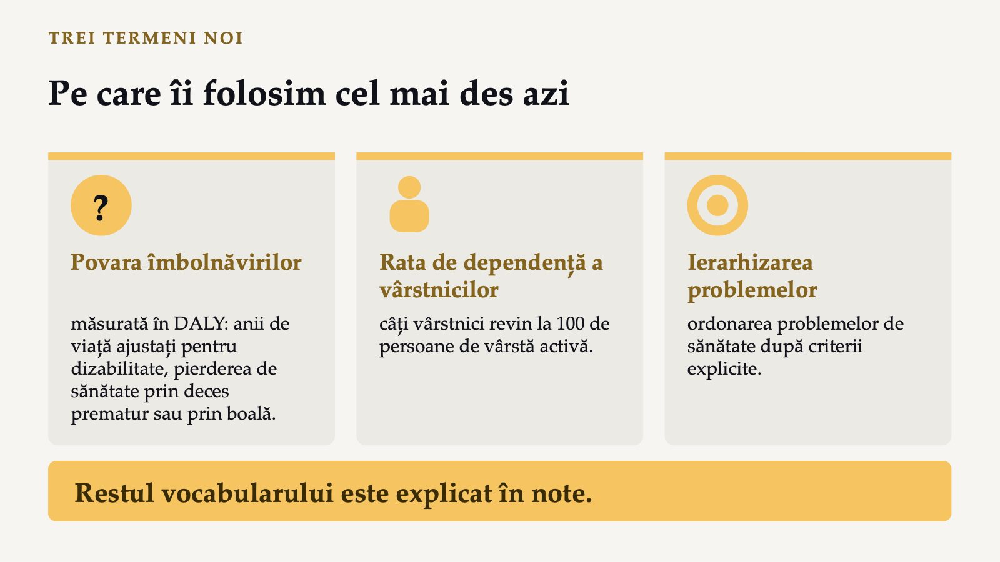
4 / 831
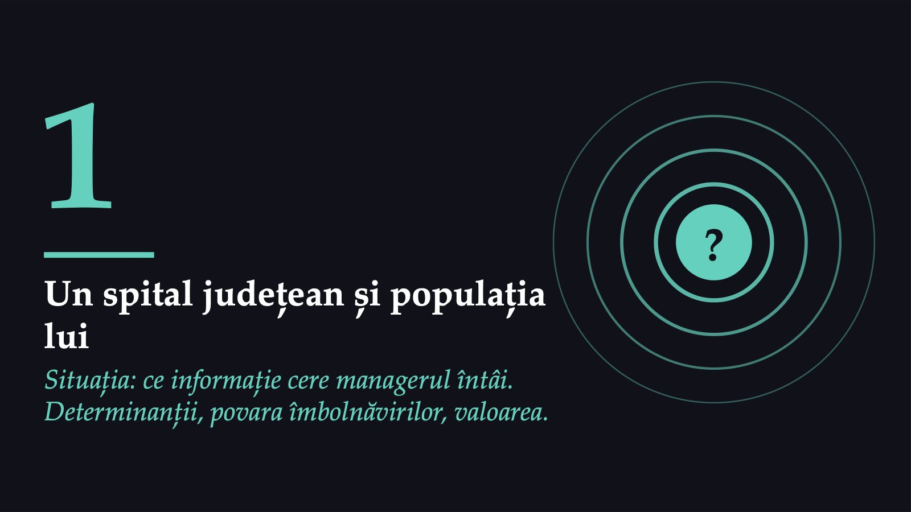
5 / 8326,6%
![ACTUL 1 · CAZ PE UN JUDEȚ REAL ȘI PE SPITALUL LUI REAL Teleorman: cea mai mare pondere a vârstnicilor dintre județe Surse: Eurostat, demo_r_pjanind3 și demo_r_gind3; structura aprobată a spitalului, februarie 2026. Spitalul Județean de Urgență Alexandria, categoria III. Un manager nou (premisă a exercițiului) primește un fond pe trei ani: ce extinde, ce restrânge? Structura, paturile și cifrele citate sunt reale, cu sursă; managerul nu este numit; cererile secțiilor, fondul, costurile, voturile și deznodământul sunt inventate, pentru exercițiu. 26,6% au 65 de ani și peste (2025) 313 033 locuitori în 2025; 361 479 în 2015](diapozitive/C01/006.jpg) 6 / 83
6 / 83725 de paturi, dar zero în geriatrie și în paliație
 7 / 83
7 / 8316 148
![CE A FĂCUT SPITALUL: ULTIMII INDICATORI PUBLICAȚI 2021, un an de pandemie Sursa: planul strategic 2022–2025 al spitalului. Planul strategic 2022–2025 semnalează lipsa medicilor în anestezie și terapie intensivă, oncologie, pediatrie, primiri urgențe, cardiologie și lipsa îngrijirilor paliative. După pandemie: niciun indicator publicat găsit. 16 148 pacienți externați în 2021, față de 22 441 în 2019 46,41% rata de utilizare a paturilor în 2021; durata medie de spitalizare 7,14 zile 5,40% mortalitatea intraspitalicească în 2021](diapozitive/C01/008.jpg) 8 / 83
8 / 83Fiecare șef de secție aduce o cerere
 9 / 83
9 / 83A
10 / 83(B) Întâi populația, apoi capacitatea
 11 / 83
11 / 83Trei instrumente, primele trei teme
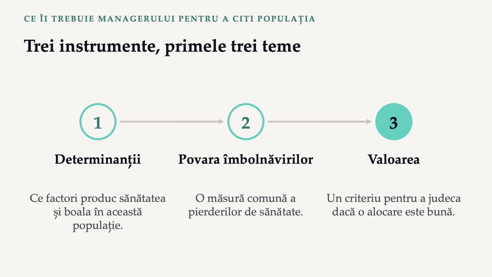
12 / 83→
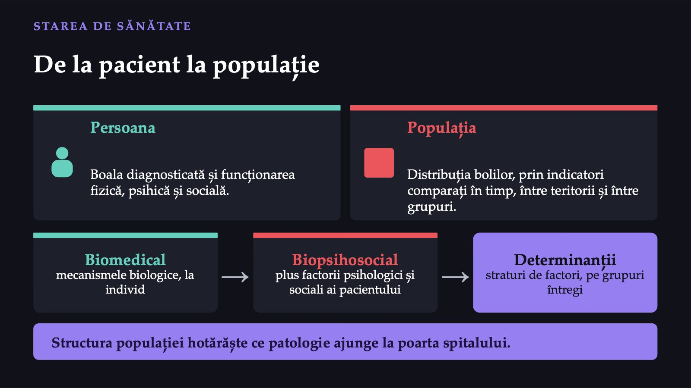
13 / 83Straturi concentrice în jurul persoanei
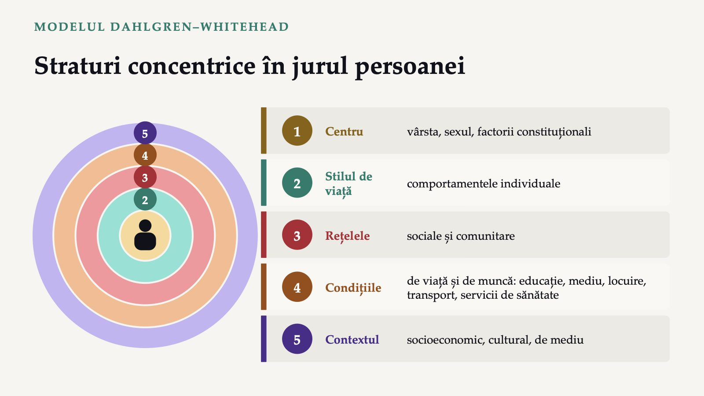
14 / 83Determinanți structurali și intermediari
![CADRUL COMISIEI OMS, 2010 Determinanți structurali și intermediari Sursa: cadrul conceptual al Comisiei OMS pentru determinanții sociali ai sănătății, 2010. Sistemul de sănătate este determinant intermediar: accesul poate reduce sau poate amplifica diferențele de expunere și de vulnerabilitate. Structurali Contextul socioeconomic și politic; poziția socioeconomică: educație, ocupație, venit, sex, etnie. Intermediari Condițiile materiale, factorii psihosociali, comportamentele, factorii biologici și sistemul de sănătate însuși.](diapozitive/C01/015.jpg) 15 / 83
15 / 83Trei principii de acțiune
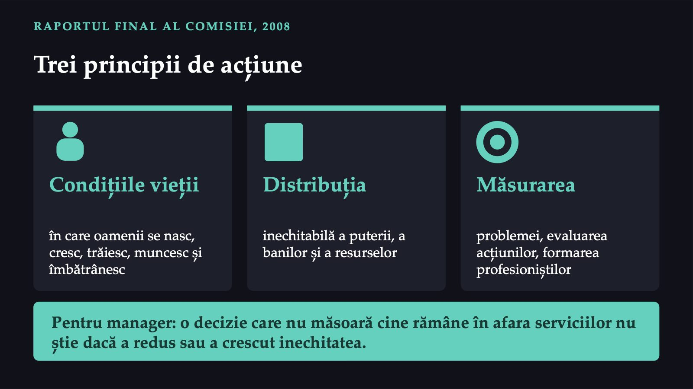
16 / 83Lista cererilor devine o întrebare despre populație
 17 / 83
17 / 83„Reinternările pacienților vârstnici cu insuficiență cardiacă arată că secția nu își face treaba.”
![AȚI CREDE ACEASTĂ AFIRMAȚIE? Un indicator de rezultat se interpretează după ce ați verificat ce parte din variația lui ține de populație și de serviciile din jur. Reinternarea depinde și de locuință, de sprijinul familiei, de accesul la medicul de familie și la medicamente după externare, de distanța până la ambulatoriu. Sistemul de sănătate este doar unul dintre determinanții intermediari. AFIRMAȚIE DE VERIFICAT „Reinternările pacienților vârstnici cu insuficiență cardiacă arată că secția nu își face treaba.”](diapozitive/C01/018.jpg) 18 / 83
18 / 83Sistemul de sănătate, pe mai multe niveluri
![CEL MAI APROPIAT STRAT Sistemul de sănătate, pe mai multe niveluri Fără legături cu medicii de familie și serviciile sociale: aceiași pacienți, de mai multe ori, tot mai avansați. Accesul geografic, financiar, organizatoric Calitatea îngrijirea corectă, la timp Continuitatea familie, ambulatoriu, spital, domiciliu Siguranța fără rău produs de îngrijire O problemă se definește simultan la nivelul pacientului, al serviciului, al comunității și al politicilor. O soluție pe un singur nivel tratează, de regulă, numai partea vizibilă.](diapozitive/C01/019.jpg) 19 / 83
19 / 83DALY
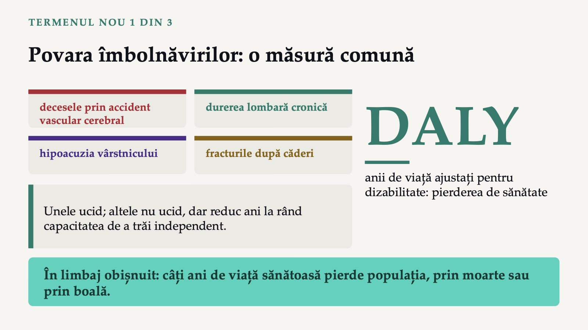
20 / 83DALY = ani pierduți + ani trăiți cu dizabilitate
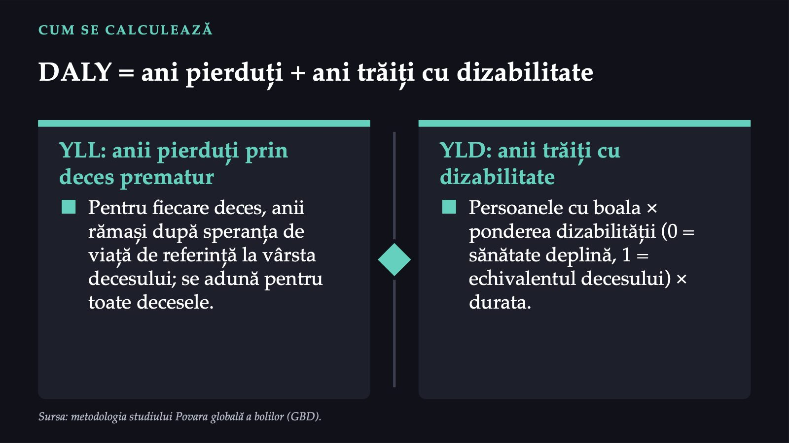
21 / 83O boală, un an: câți DALY?
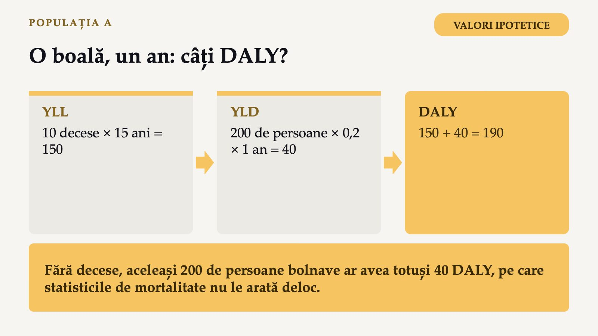
22 / 83Trei din primele zece nu ucid aproape deloc
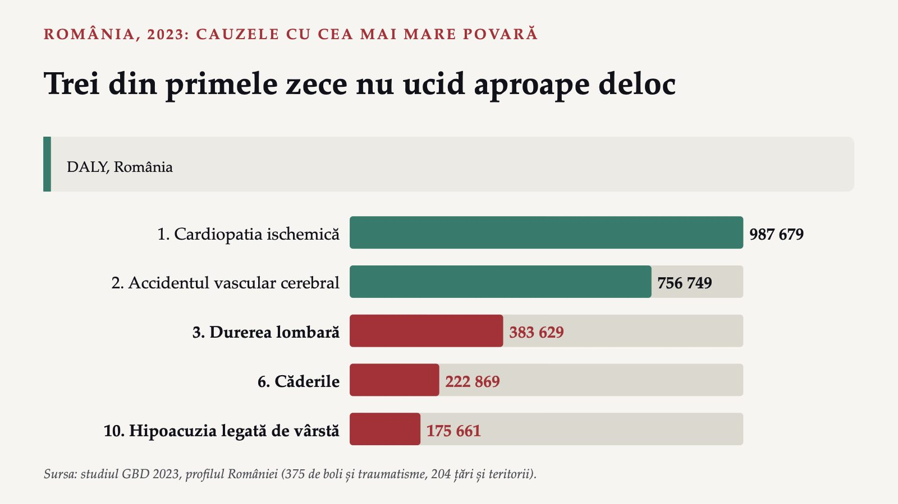
23 / 83Planificarea numai după mortalitate subestimează
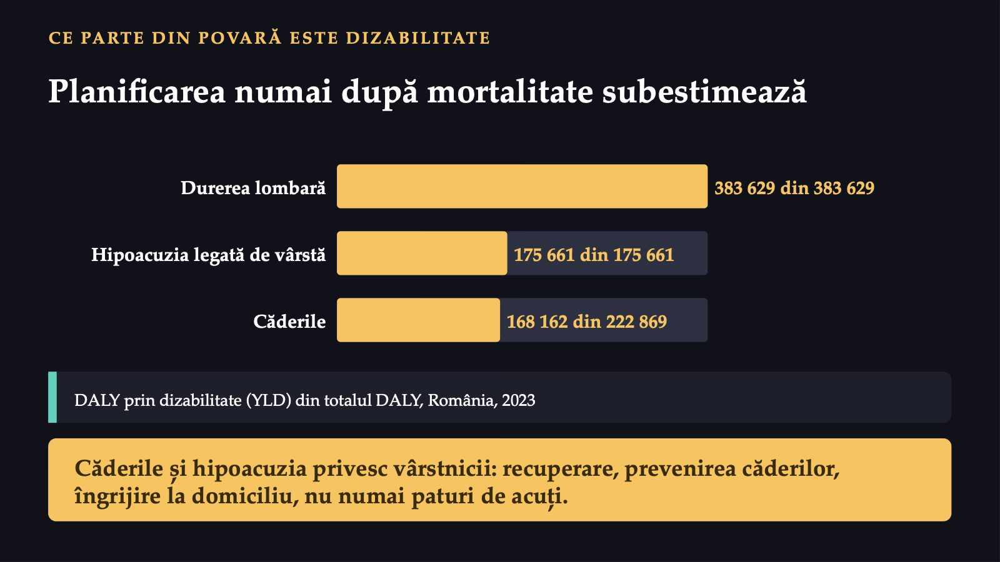
24 / 83„Clasamentul GBD pentru România arată ce probleme are județul nostru.”
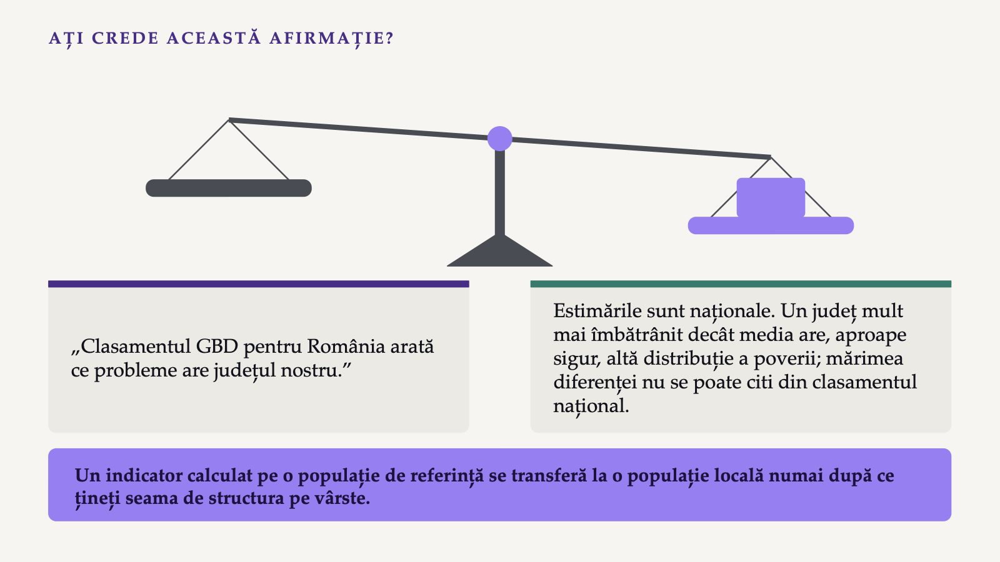
25 / 83Patru sensuri ale valorii, după experții Comisiei Europene
26 / 83Valoarea tehnică și valoarea alocativă
![CELE DOUĂ ÎNTREBĂRI ALE MANAGERULUI Valoarea tehnică și valoarea alocativă Valoarea personală: pentru vârstnicul cu mai multe boli, rezultatul care contează poate fi rămânerea acasă. Tehnică „Funcționează bine maternitatea?” Alocativă „Ar produce aceiași bani mai multă sănătate în paliative sau în geriatrie?” Inechitatea între boli: unele grupuri de pacienți primesc resurse disproporționat de mari. Definiția lui Porter (2010), rezultate pe unitate monetară, este considerată de experți prea îngustă: lasă deoparte echitatea.](diapozitive/C01/027.jpg) 27 / 83
27 / 83PAUZĂ
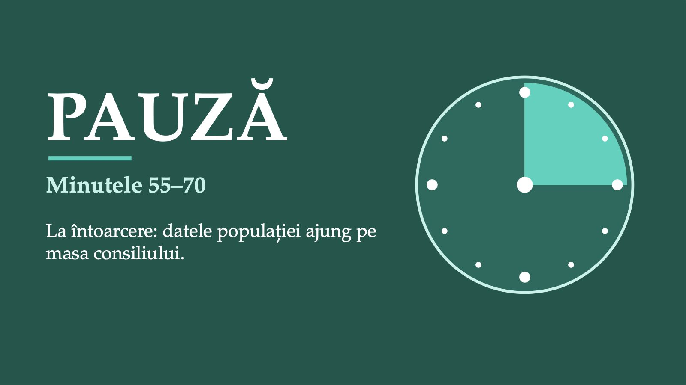
28 / 832
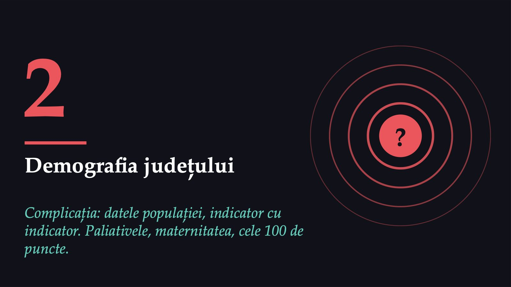
29 / 83Datele populației ajung pe masa consiliului
 30 / 83
30 / 83Câți, cum sunt distribuiți, cum se vor schimba
![DEMOGRAFIA Câți, cum sunt distribuiți, cum se vor schimba Eurostat folosește populația cu reședința obișnuită: emigrantul plecat de ani de zile rămâne cu domiciliul în județ, dar nu mai folosește serviciile lui. Statica starea la un moment dat: volumul și structura (vârstă, sex, mediu, instruire) Dinamica mișcarea naturală (nașteri, decese) și mișcarea migratorie Recensământul toată populația, la circa zece ani Starea civilă nașterile, decesele, continuu Estimarea anuală la 1 ianuarie, între recensăminte](diapozitive/C01/031.jpg) 31 / 83
31 / 8313,4%
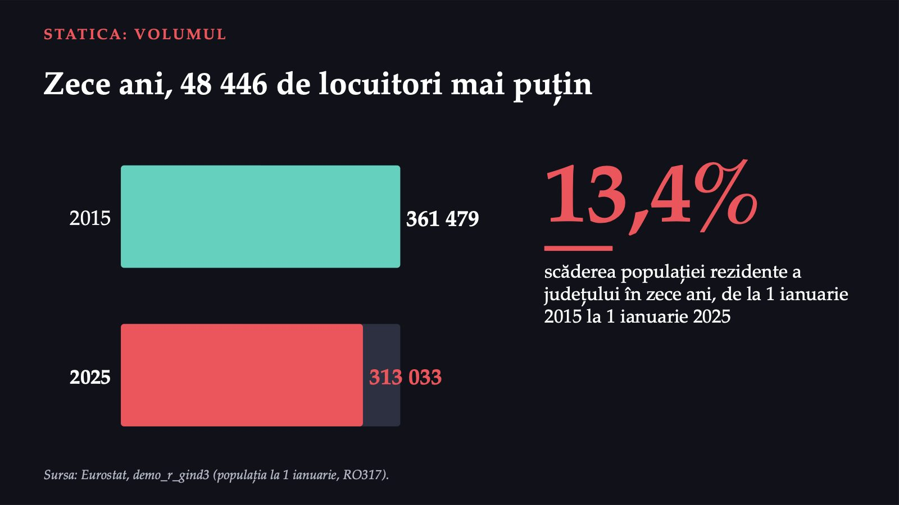
32 / 83Piramida județului: baza mai îngustă decât mijlocul
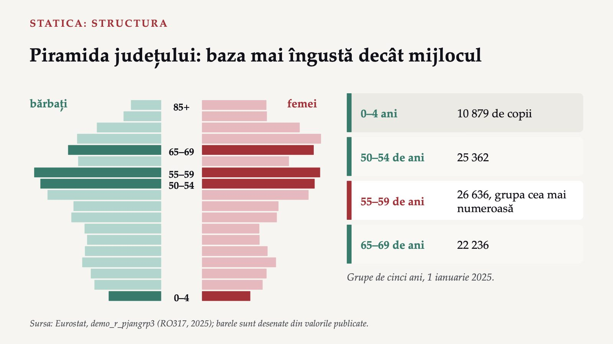
33 / 83+19,8%
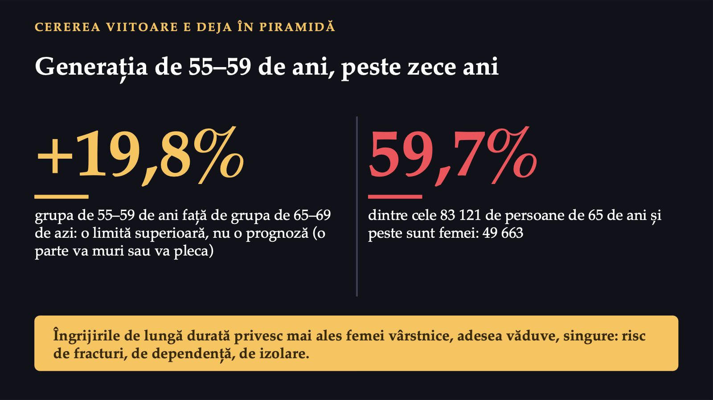
34 / 83Indicatorii de structură: piramida în câteva cifre
![TERMENUL NOU 2 DIN 3 Indicatorii de structură: piramida în câteva cifre „Dependența” este o convenție statistică, nu o constatare clinică. 1 Ponderea grupei persoanele din grupă / populația totală × 100 2 Dependența vârstnicilor 65 de ani și peste / 15–64 de ani × 100 3 Dependența tinerilor 0–14 ani / 15–64 de ani × 100; totală = suma celor două 4 Vârsta mediană jumătate dintre persoane sunt mai tinere, jumătate mai în vârstă 5 Indicele de îmbătrânire vârstnici de 65 de ani și peste la 100 de copii de 0–14 ani](diapozitive/C01/035.jpg) 35 / 83
35 / 83313 033
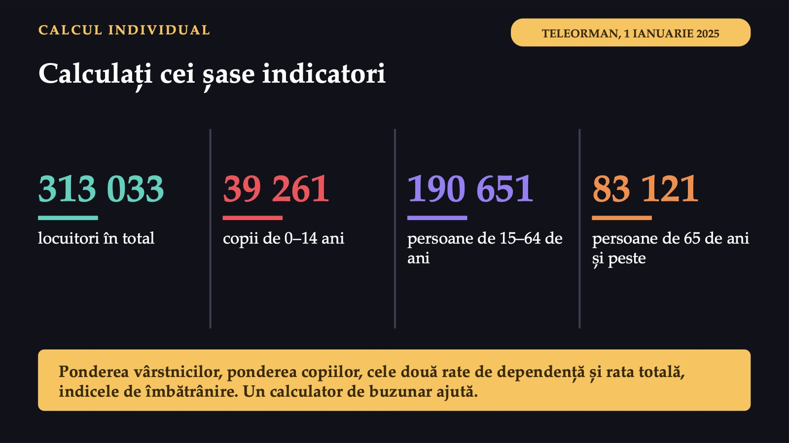
36 / 8326,6%
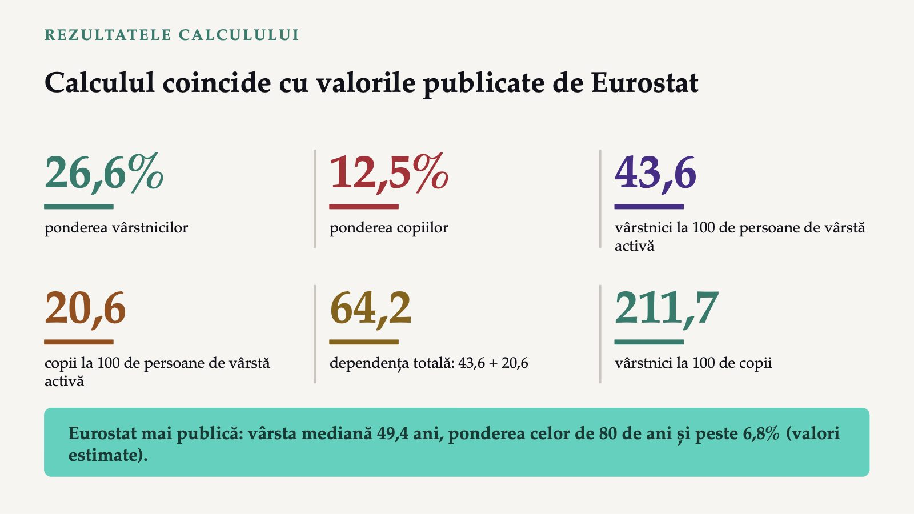
37 / 83Departe de restul țării
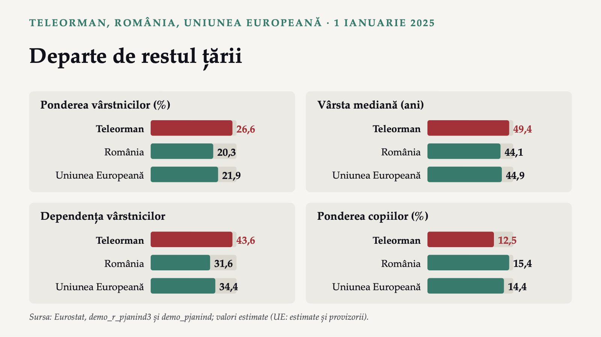
38 / 83„Ponderea vârstnicilor a crescut, deci vom avea mai mulți pacienți vârstnici.”
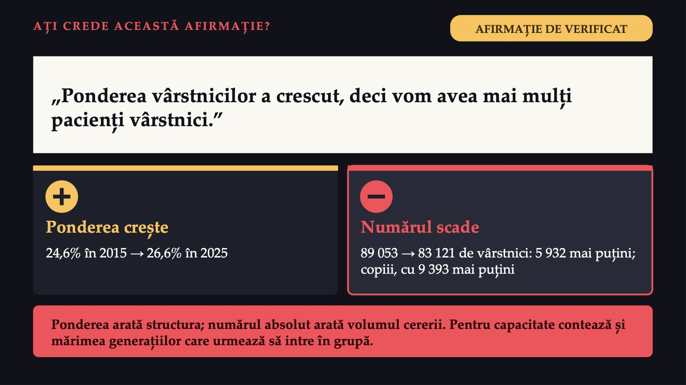
39 / 83A
40 / 835 495
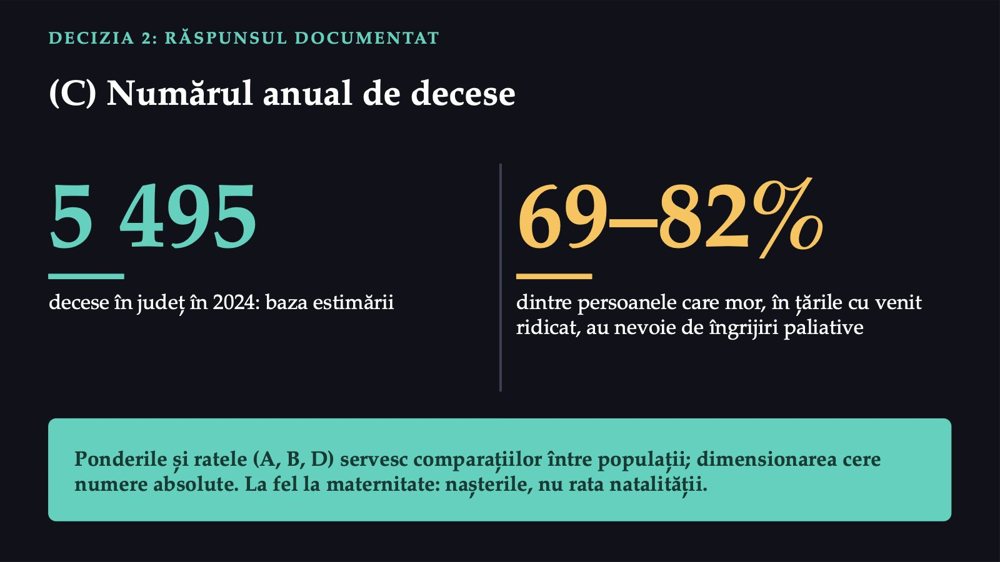
41 / 83Paliativele în Teleorman: un gol de sistem
![UNDE, NU NUMAI CÂTE Paliativele în Teleorman: un gol de sistem Surse: Ministerul Sănătății, material informativ 2023; proiectul orașului Videle. Dilema consiliului: un compartiment propriu sau colaborarea cu Videle, plus o echipă la domiciliu? 0 paturi de îngrijiri paliative în spital și paturi contractate în județ cu casa de asigurări în 2023 4 județe fără structură spitalicească de paliative și fără furnizor la domiciliu, Teleorman între ele (2023) 34 paturi noi la Videle: 17 670 754,59 lei, gata la 28.02.2027](diapozitive/C01/042.jpg) 42 / 83
42 / 83Nașterile și decesele, la 1 000 de locuitori
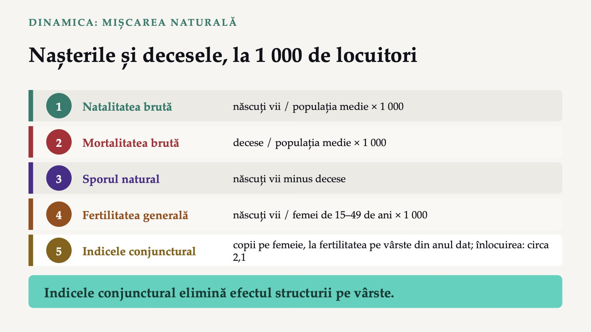
43 / 834,8
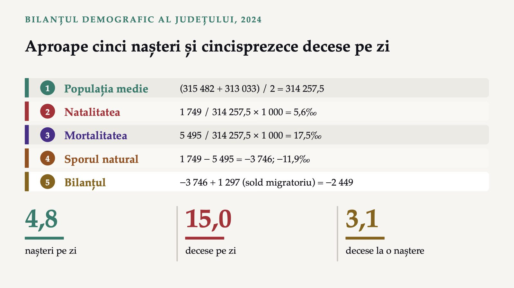
44 / 8331,1
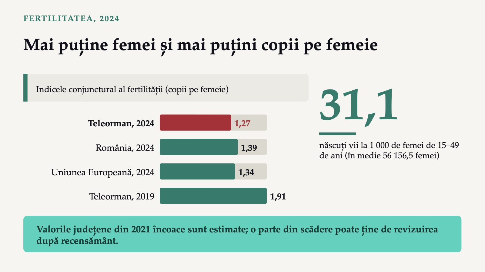
45 / 83Nașterile scad, decesele rămân de câteva ori mai multe
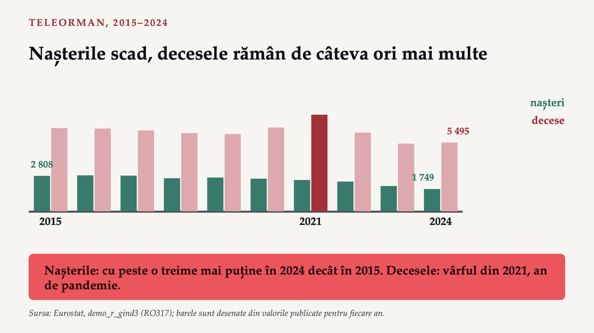
46 / 835,6‰
 47 / 83
47 / 83Mortalitatea copiilor: fiecare componentă, altă verigă
![REȚEAUA MATERNO-INFANTILĂ Mortalitatea copiilor: fiecare componentă, altă verigă Pe puține nașteri, ratele variază mult: citiți medii pe mai mulți ani. 1 Neonatală precoce sub o săptămână: prenatalul, sarcinile cu risc, nașterea, nivelul maternității 2 Neonatală sub 28 de zile / născuți vii × 1 000 3 Postneonatală 28 de zile – un an (infantilă minus neonatală): condițiile de viață, medicul de familie, vaccinarea 4 Perinatală sub o săptămână + născuți morți (după 24 sau 28 de săptămâni), la 1 000 de nașteri](diapozitive/C01/048.jpg) 48 / 83
48 / 83Un rezumat al mortalității pe vârste dintr-un an
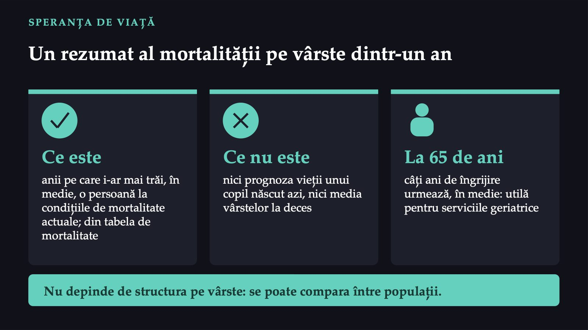
49 / 83−4 584
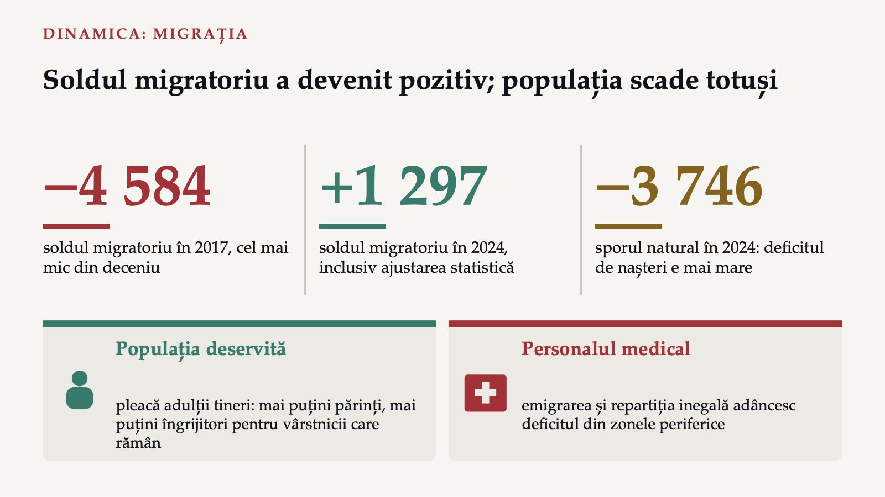
50 / 83Organizarea moștenită și populația de azi
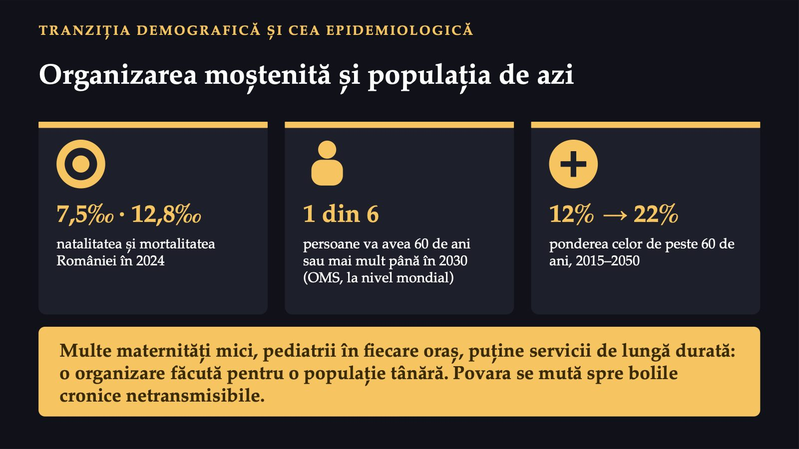
51 / 8318,9%
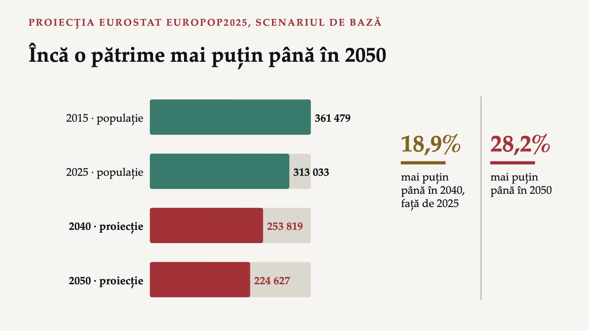
52 / 83EUROPOP2019 subestimase județul cu 6,0%
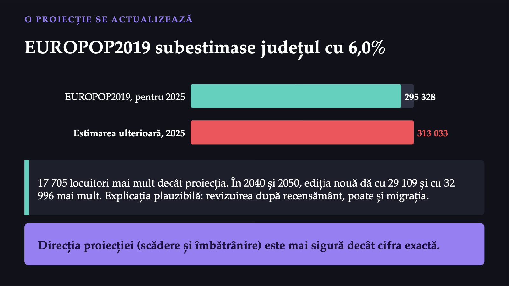
53 / 83Populația scade mai repede decât internările
![CEREREA DE ÎNGRIJIRI ÎNTR-O POPULAȚIE CARE ÎMBĂTRÂNEȘTE Populația scade mai repede decât internările Cererea scade mai încet decât populația și se mută spre vârstnici. Reducerea capacității proporțional cu populația lasă fără locuri exact serviciile pentru care cererea se menține. VALORI IPOTETICE Internări pe an la 1 000 de locuitori (ipotetic): 60 copii, 110 adulți, 330 vârstnici; populația reală, 2015 și 2025. 13,4% mai puțin populația, 2015–2025 10,8% mai puțin internările estimate: 56 922 → 50 757 51,6% → 54,0% ponderea vârstnicilor în internări](diapozitive/C01/054.jpg) 54 / 83
54 / 831 749
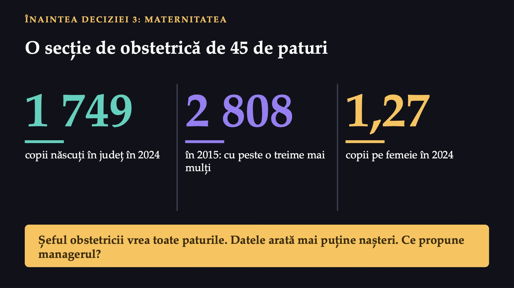
55 / 83A
 56 / 83
56 / 83≥ 1 050
![DECIZIA 3: RĂSPUNSUL DOCUMENTAT (C) Datele spitalului înaintea redimensionării Demografia arată direcția și justifică întrebarea, dar nu poate hotărî singură închiderea unui serviciu de care depinde nașterea în siguranță. (A) ignoră datele (B) le folosește dincolo de ce pot dovedi (D) presupune o cerere pe care nimic nu o susține ≥ 1 050 nașteri în spital în 2021, în două grupe de diagnostice (674 + 376): nu o maternitate cu activitate redusă 4,61% pacienți transferați în 2021, pe tot spitalul; maternitatea nu e publicată](diapozitive/C01/057.jpg) 57 / 83
57 / 83100 de puncte
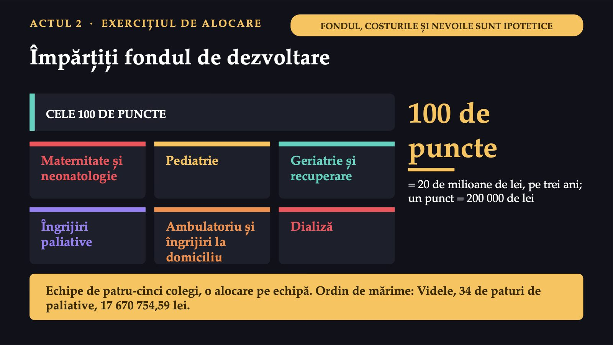
58 / 83Nevoia totală: 28 764 000 de lei, peste fond
 59 / 83
59 / 83Câte puncte dați fiecărui serviciu?
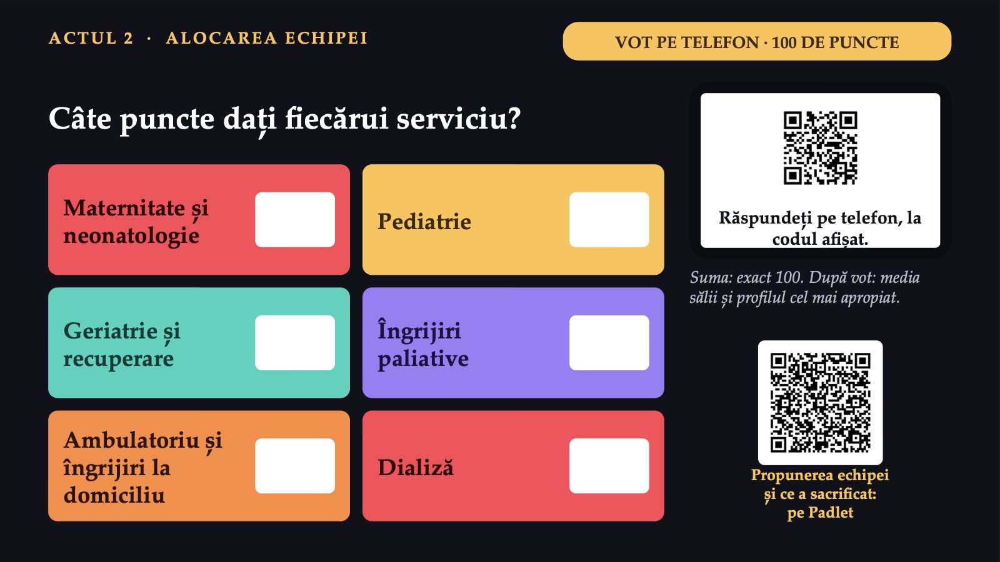
60 / 8342%
![VALORI IPOTETICE TREI PROFILURI CALCULATE DINAINTE Același fond, rezultate foarte diferite Procentul: nevoia acoperită din 28 764 000 de lei. Rețeaua istorică 30 · 25 · 15 · 5 · 15 · 10 42% 8 000 000 de lei peste nevoie; paliative 250 din 2 198; geriatrie 500 din 1 662 Împărțit egal 17 · 17 · 17 · 17 · 16 · 16 52% 5 000 000 de lei peste nevoie; paliative 850; geriatrie 566 Nevoia demografică întâi 10 · 5 · 30 · 25 · 25 · 5 70% nimic peste nevoie; paliative 1 250; geriatrie 1 000; dar pediatria 67%, dializa 4 aparate din 6](diapozitive/C01/061.jpg) 61 / 83
61 / 83Media populației nu arată urgența vitală
 62 / 83
62 / 83PAUZĂ
63 / 833
64 / 83Consiliul medical are de ales
![Consiliul medical are de ales Fondul ajunge pentru cel mult două programe: ierarhizați explicit. ACTUL 3 · SPITALUL ESTE REAL; PROBLEMELE, VOTURILE ȘI SCORURILE SUNT INVENTATE P1 Căderile și fracturile la vârstnici: internări repetate, recuperare insuficientă P2 Vârstnicii cu boli cronice progresive care mor cu simptome necontrolate, internați în ultimul an de viață P3 Nou-născuții cu nevoie de îngrijiri de nivel înalt, la natalitate în scădere și lipsă de pediatri P4 Boala cronică de rinichi în stadiul final: tot mai mulți pacienți cu nevoie de dializă](diapozitive/C01/065.jpg) 65 / 83
65 / 83Constatarea nu este încă o problemă
![DE LA DATE BRUTE LA PROBLEME DEFINITE Constatarea nu este încă o problemă CONSTATARE „Unitatea de primiri urgențe este aglomerată.” Problema bine definită: cine ajunge, când, de ce, cu ce consecințe, față de ce referință; o diferență între situația constatată și cea dorită, pentru un grup definit, cu o intervenție posibilă. Datele clinice detaliate, dar numai pentru cei ajunși la servicii Datele administrative volum mare, construite pentru plată Datele de sănătate publică toată populația, cu întârziere, prea agregate](diapozitive/C01/066.jpg) 66 / 83
66 / 83Mărimea, tendința, comparația; apoi criteriile
![METODELE CANTITATIVE ȘI CRITERIILE Mărimea, tendința, comparația; apoi criteriile Prevalența / incidența volumul îngrijirii continue / viteza cu care problema se reînnoiește Seriile în timp cel puțin cinci ani; atenție la artefacte și la schimbarea populației Comparațiile aceleași definiții, aceeași perioadă, standardizarea pe vârste Despre problemă mărimea, gravitatea, inechitatea Despre intervenție eficacitatea, fezabilitatea, cost-eficacitatea, acceptabilitatea, concordanța cu strategiile O analiză sistematizată: 37 de studii din 1 076 de înregistrări; metode conduse de comunitate, cadre structurate, combinații.](diapozitive/C01/067.jpg) 67 / 83
67 / 83Rangul priorității de bază (BPR)
![TERMENUL NOU 3 DIN 3 · METODA HANLON, 1984 Rangul priorității de bază (BPR) Organizația Panamericană a Sănătății (2019) scoate filtrul PEARL în preselecție și adaugă inechitatea (0–5) și poziționarea instituțională (0,67–1,50). 1 A · Mărimea 0–10 2 B · Gravitatea 0–20: urgența, severitatea, pierderea economică, implicarea altora; aici fiecare factor de la 0 la 5 3 C · Eficacitatea 0–10 4 D · Fezabilitatea 0 sau 1, din cinci factori PEARL: oportunitatea, economia, acceptabilitatea, resursele, legalitatea](diapozitive/C01/068.jpg) 68 / 83
68 / 83Eficacitatea înmulțește tot; PEARL poate anula tot
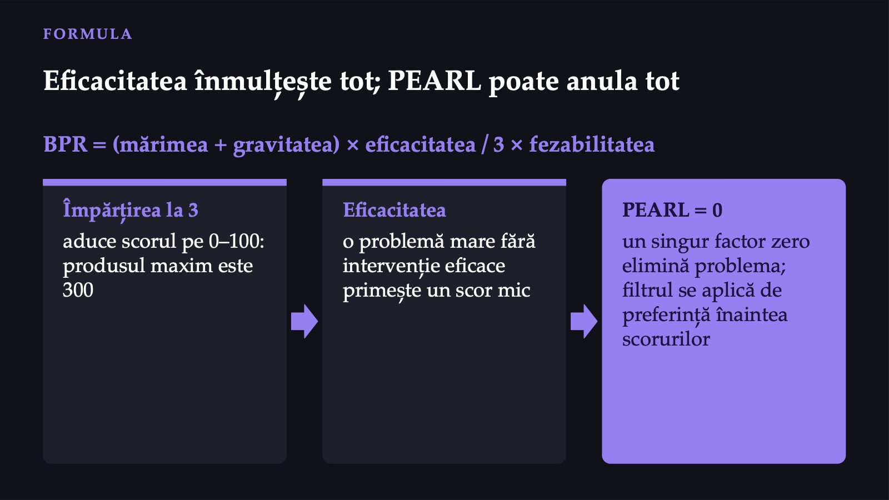
69 / 83Metoda Hanlon pe cele patru probleme
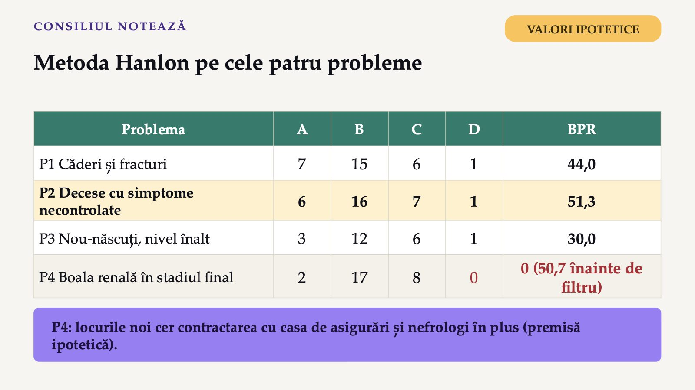
70 / 83A
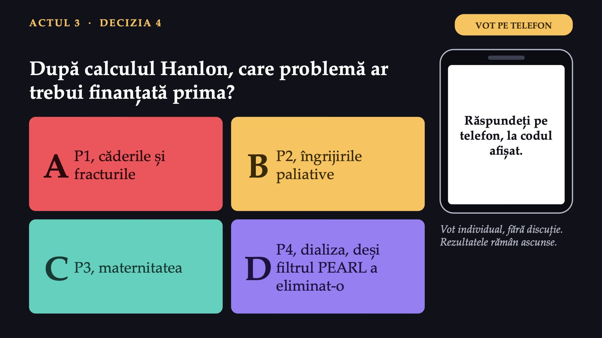
71 / 83P2: 51,3
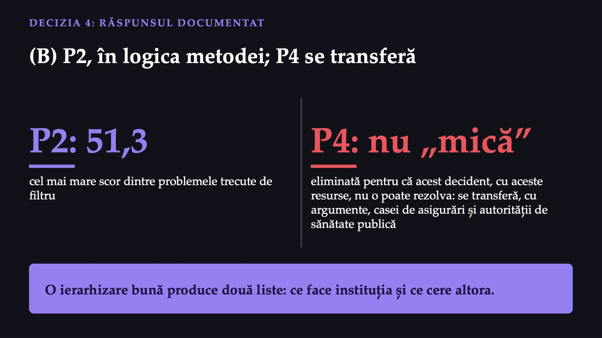
72 / 83Și P2 stă pe o premisă ipotetică
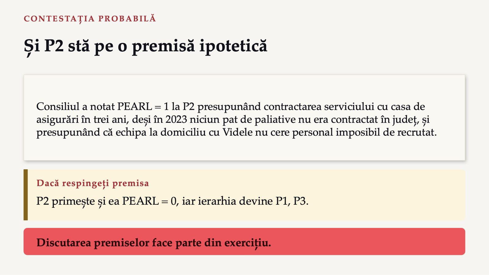
73 / 83Matricea cu ponderi: P1 și P2 la egalitate
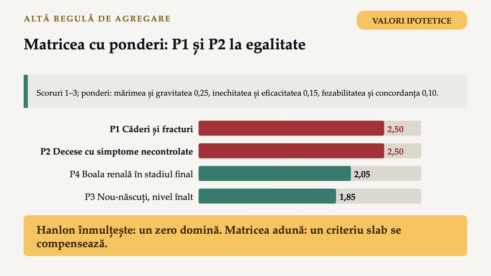
74 / 83De ce există problema și ce soluții sunt acceptabile
![METODELE CALITATIVE De ce există problema și ce soluții sunt acceptabile Când sunt necesare: datele cantitative lipsesc sau sunt nesigure; decizia depinde de bariere și percepții; ierarhizarea cere acordul unor actori cu interese diferite. Interviul cu informatori-cheie medicul de familie dintr-o comună izolată, asistentul comunitar; semistructurat, analizat pe teme Focus grupul aparținătorii vârstnicilor: percepții și bariere, nu un clasament Observația directă circuitul pacientului, o tură de gardă: ce se întâmplă efectiv](diapozitive/C01/075.jpg) 75 / 83
75 / 83Grupul nominal și metoda Delphi
![METODELE DE CONSENS Grupul nominal și metoda Delphi Consiliul care se reunește o după-amiază: grupul nominal. Experți dispersați sau ierarhie care inhibă: Delphi. Grupul nominal față în față, cel mult șapte participanți: ideile în tăcere, pe rând, clarificate, apoi votul prin ordonare (frecvent cinci idei). Vocea puternică nu domină. Delphi chestionare succesive, panel anonim, de regulă două runde, cu mediana grupului; scala RAND de 9 puncte: adecvat la mediana de cel puțin 7, inadecvat la cel mult 3.](diapozitive/C01/076.jpg) 76 / 83
76 / 83Egalitatea P1 = P2 nu se rezolvă prin aritmetică
 77 / 83
77 / 83Ce s-a întâmplat: planul pe trei ani
![Ce s-a întâmplat: planul pe trei ani Comparați cu voturile sălii. DEZNODĂMÂNT INVENTAT, PENTRU EXERCIȚIU: PLANUL REAL AL SPITALULUI NU ESTE CUNOSCUT 1 Paliativele echipă mobilă la domiciliu, cu medicii de familie, și acord cu centrul de la Videle; fără compartiment propriu 2 Căderile prevenire și recuperare după fractură; ambulatoriu de geriatrie legat de recuperare 3 Maternitatea păstrată; analiza nașterilor și a transferurilor; paturile în plus, reconvertite în geriatrie 4 Dializa notă către casa de asigurări și direcția de sănătate publică: contractarea unor locuri noi](diapozitive/C01/078.jpg) 78 / 83
78 / 83A
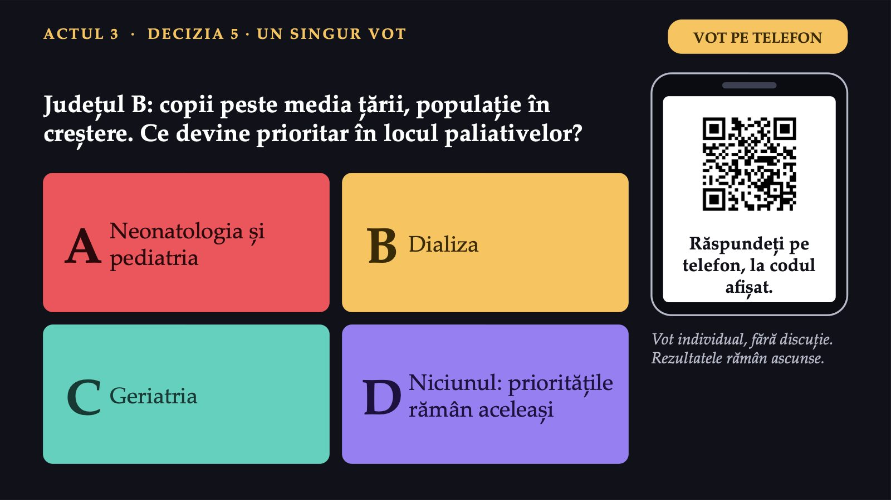
79 / 83(A) Serviciile după populația deservită
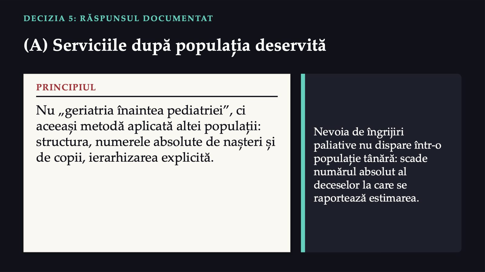
80 / 83Înainte de a cere sau de a aproba o investiție
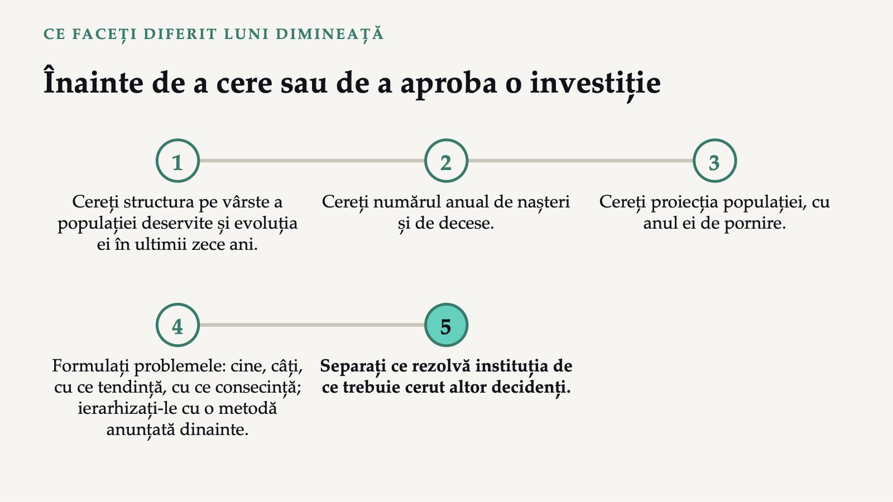
81 / 83Cinci lucruri din ședință
 82 / 83
82 / 83Trei întrebări pentru final
83 / 83Săgeți sau spațiu: navigare · O: vedere de ansamblu · N: notele prezentatorului · F: ecran complet · Esc: închidere